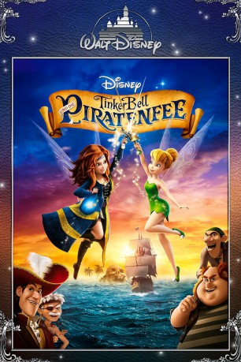

Alternativ: The Pirate Fairy
 
 IMDB-Wertung: 6.7 / 10
IMDB-Wertung: 6.7 / 10  Metascore:
Metascore: 
Gerade vor Pixie Hollows größtem Fest im Jahr stiehlt die missverstandene Fee Zarina den wertvollen blauen Feenstaub und verschwindet damit spurlos. TinkerBell und ihre Feenfreunde verfolgen Zarina und stellen schon bald fest, dass sie gemeinsame Sache mit James, dem zukünftigen Captain Hook, und dessen Piratencrew von Skull Rock macht. Als TinkerBell sie zur Rede stellen will, wird ihr Leben und dass ihrer Feenfreundinnen ganz plötzlich auf den Kopf gestellt. Denn Zarina ist in der Lage, einen Zauber über sie auszusprechen, woraufhin die Feen unfreiwillig ihre Talente tauschen. An die Veränderungen müssen TinkerBell und die anderen sich bald gewöhnen, um den Feenstaub in Sicherheit zu stellen, bevor böse Mächte davon Gebrauch machen und gesamt Pixie Hollow in Gefahr schwebt.
Jahr: 2014
Dauer: 75 Minuten
FSK: 0
Land: USA Studio: Walt Disney Studios Home EntertainmentTonspuren: DD5.1 - ,
Untertitel:
Auflösung: 1080p (1920x1080) Größe: 4311 MB
Genre: Abenteuer, Fantasy, Animation/Trick
Regisseur: Peggy Holmes
Drehbuch: Jeffrey M. Howard, Kate Kondell, John Lasseter, Peggy Holmes, Roberts Gannaway
Soundtrack: Joel McNeely
Darsteller:
Datei: X:\Kinder Disney HD\Tinkerbell\TinkerBell 5 - und die Piratenfee (2014, FSK0, 1920x1080) 3D.mkv seit 09.12.2015
Festplatte: Kinder-Filme+Trick
 Es gibt insgesamt 11 Filme in der Gruppe 'Kinder Disney HD\Tinkerbell'
Es gibt insgesamt 11 Filme in der Gruppe 'Kinder Disney HD\Tinkerbell'